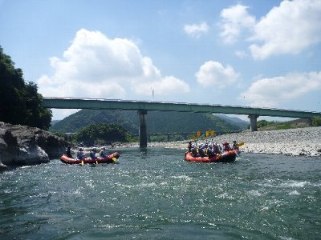

富士川ラフティング | 2011年7月 幹事：いづみ |
|---|---|
| 今年もラフティングのシーズンがやってきました。去年は、水量は申し分なかったけど、子供や高齢者が沢山いて、危険箇所回避でイマイチ。今年は・・・・ 7月中旬の日曜。天気は晴れ。最近、雨が降らないので水量が心配です。 9時に、いつもお世話になっているナチュラルアクションに集合。今回も人が多いな〜。シフトベルからは10名の参加で、１艇と半分なので、3人が他の参加者との合同チームです。 実際、今回は水量が少ないらしく、釜場回避はないけれど、しっかり漕がないとならないので頑張ってねと、ガイドに念押しされました。 やっぱ、水量少ないのか・・まあ、予想はしていたけどね。 ま、水遊び楽しもう！ っと気持ちも新たに出発です。 艇が全部で７〜８艇だったかな？ 結構な数が有りますね。僕らが乗った艇のガイドがリーダーらしく、他のガイドに指示をしていました。リーダーになれる人だから、それだけ経験を積んでいるって事で、こういうツアーはガイドがどれだけ楽しませてくれるかで、全然違いますから楽しみです。 | |
|  |  |
| 初めにくる釜場は、それなりにアップダウンして楽しめました。しかし、落ちそうなほど激しくはありません。 緩やかな場所では、艇を降りて、泳いだり浮かんでいたり。こういうのも結構楽しい。 コース中盤からは、水が少なすぎて、いつもなら普通に通過するところが、底が浅くなり、艇が引っかかったりします。そうならないように、いつも以上にコース取りは慎重です。一見すると同じに見える右と左のコースでは、右は引っかかるけど、左は通過出来るとか。 途中で１艇が岩に引っかかり、バランスを崩して（岩を避けるために片側に人が寄っていたため）ひっくり返ってしまいました。これ結構危ないです。岩場でそこそこ流れも早く浅い。投げだされた人が岩にぶつかるかもしれません。 すぐさま各艇のガイドから救助ロープが飛び交います。 ま、ライフジャケット着てヘルメット付けてるから、そうそう大事には至らないのだけどね。 岩に捕まらないために、微妙なコントロールと、捕まりそうな時はみんなでジャンプ。いつもとは違う緊張とアクティビティになりました♪ ナイスなガイドと相まって、結構楽しめた2011ラフティングです。 | |
 |  |
| 午後は恒例のバーベキュー。ちょっと離れたユー・トリオまで移動して、遅い昼食です。 このバーベキューも楽しみの一つです。結構な量のお肉と野菜、焼そばで、お腹一杯になります。ここのバーベキューエリアは、いつも貸し切りみたい状態だけど、他の人使わないのかな？ それとも借り切ってる？ 楽しく一日過ごしたら、足が凄く日焼けしてました〜（上半身は去年の教訓を生かし、ラッシュガード付けていたんだけどね） | |
 |  |
| 写真＆コメント by べっしー | |